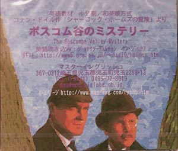

| 【音声付】聞き流すだけで英語をマスター ボスコム谷のミステリー（全） 中級用 | |
| 小分割/和英順方式普及会 | |
| Kisosha (2014) | |
『シャーロック・ホームズの冒険』より
ボスコム谷のミステリー
The Boscombe Valley
Mystery
（小分割/和英順方式英語教材）
【聞き流すだけで
英語をマスター】
日本語→英語の順、
細かい区切りで学ぶ英語教材
音声の再生について
■本文中の【音声再生】リンクをクリックしても、各章ごとの再生ができます（これはインターネット接続が必要です）。
目次 Table of Contents

Sidney Paget画
No.１ ホームズからの電報
No.２ ホームズと列車に乗る
No.３ ボスコム谷の農場に関するホームズの説明
No.４ 事件の概要
No.５ ホームズの説明
No.６ くせ者の状況証拠
No.７ ひとすじの光
No.８ ジェームズ・マッカーシー青年の証言
No.９ マッカーシー青年と検死官の会話
No.10 ボスコム谷殺人事件の容疑者マッカーシー青年の供述について話し合うホームズとワトソン
No.11 父親殺しの被疑者ジェームズ・マッカーシー青年は無罪と主張する友人のアリス・ターナー嬢
No.12 ジェームズ・マッカーシー青年に面会するためシャーロック・ホームズとレストレード警部は留置場へ
No.13 留置場から戻ったホームズ
No.14 ボスコム沼で調査
No.15 ボスコム沼でのホームズ
No.16 現場で起こったこと
No.17 ホームズの推理
No.18 実地踏査に関し
No.19 マッカーシー青年の恋人ターナー嬢の父ジョン・ターナー
No.20 オーストラリアで
No.21 ホームズの判断
（付録）
【ローマの休日】
（音声付Kindle本）（映画の音声を使用）
【イソップ物語】
ウサギは The Hare, カメの主張は不可能と単純に思い believing her assertion to be simply impossible, その提案に賛同しました assented to the proposal; そして彼らは同意しました and they agreed キツネがコースを選び that the Fox should choose the course ゴールを定めると and fix the goal.
レースに決められた日 On the day appointed for the race 両者は共にスタートしました the two started together. カメは一瞬たりとも止まることなく The Tortoise never for a moment stopped, 進み続けました but went on ゆっくり、でも着実なペースで with a slow but steady pace まっすぐコースの終点に至るまで straight to the end of the course.
ウサギは The Hare, 道ばたで横になり lying down by the wayside, すっかり眠りに落ちてしまっていました fell fast asleep. ようやく目覚め At last waking up, できる限り速く追いかけたのですが and moving as fast as he could, 彼は目にしたのです he saw カメがゴールに着いていたのを the Tortoise had reached the goal, そして疲労のあとの心地よいうたた寝に入っていたのを and was comfortably dozing after her fatigue.
ゆっくりでも着実な者がレースに勝つのです Slow but steady wins the race.
北風と太陽
The North Wind and the Sun
北風がまず自分の力を試して The North Wind first tried his power 精一杯吹きました and blew with all his might, でも突風が強烈になればなるほど but the keener his blasts, 旅人はますます服を肌身に押さえたのです the closer the Traveler wrapped his cloak around him, それで結局 until at last, 勝利の希望をすべて放棄して resigning all hope of victory, 風は太陽を呼び出しました the Wind called upon the Sun 何ができるかを見るためです to see what he could do.
太陽は突然 The Sun suddenly 全力で暖かい日差しを送りました shoneout with all his warmth. 旅人は The Traveler 温暖な光線を感じるやいなや no sooner felt his genial rays 着物を一つまた一つと脱いでいきました than he took off one garment after another, ついには and at last, 暑さに全くまいってしまって fairly overcome with heat, 服を脱ぎ undressed 道ばたの小川で水浴したのでした and bathed in a stream that lay in his path.
説得は力づくより良いのです Persuasion is better than Force.
The North Wind and the Sun
「聞き流すだけで
英語をマスター」
電子書籍版
聞き流すだけで英語をマスター

Amazonで販売中の作品（CD版）
音声一括ダウンロード
［クリック（タップ）してください］
ダウンロード、解凍（展開）方法
◎上の「音声一括ダウンロード」の文字をクリック（タップ）すると、ダウンロードページへ行きます。
◎ダウンロードページで、フォルダ名の□をクリックしてチェックマークを入れ、画面下部の「ダウンロード」をクリックすると、ダウンロードが始まります。
◎ファイルは、「AmazonCloudDriveDownload.zip」の名でダウンロードされます。ダウンロード後、それを解凍（展開）してください。
［解凍（展開）は、届けられた荷物の包装を解くことです。パソコンには解凍（展開）機能がついています。
スマホ等では一部、解凍（展開）機能がついていないものがあります。その場合は無料の解凍アプリ等をインストールして下さい。Appストアや、Playストアで入手できます］。
◎ZIPファイルを解凍（展開）すると、.そのzipファイルとは別に、「AmazonCloudDriveDownload」というフォルダ(拡張子zipはつかない）が新たに形成されます。その中に音声ファイル群（○○.mp3）がはいっています。それをパソコンやスマホ等のミュージック･プレイヤーで再生して下さい。
kindleペーパーホワイトや、iPhone, iPadなどでは、上記リンクをクリックしてもアクセスできなかったり、またブラウザによっては、アクセスできてもダウンロードできなかったりという場合があります。
その場合は、パソコンに、パソコン用kindle無料アプリを入れ、パソコンで本書を開いてこのページからアクセスすると簡単です。
あるいはスマホ等端末に、ダウンロード機能を付加する無料アプリや、ZIP解凍（展開）の無料アプリ等を入れて下さい（Appストアや、Playストアで入手できます）。
パソコンのミュージックプレーヤーに音声ファイルを取り込んで再生してください。
（Androidスマホ、タブレットの場合）
音声の再生には、「ファイルを開く」必要がありますが、スマホやタブレット用Webブラウザは「ファイルを開く」メニューがないことが多いです。その場合、たいていの機種ではブラウザのURL欄に file:///sdcard と手入力し、Enterキーを押すと、端末内のフォルダ一覧が表示されます。
ダウンロードした先のフォルダ（たいてい「download」フォルダ）をタップすると、その中に「AmazonCloudDriveDownload」フォルダがあるはずです。その中に、音声ファイル群（.mp3）が入っています。ファイルをタップすると再生されます。
［注意事項］
◎ダウンロード用URLを他人に転送、譲渡、販売することは違法行為です。ご自分でのみご使用下さい。
◎ダウンロードした音声ファイルを、ご自分の他のコンピュータや、スマホ、携帯、ＭＰ３プレーヤーや、ＣＤ－Ｒ等にコピーすることは可能です（ただし３回まで）。
その前にダウンロードし、保存して下さい。
URLが替えられたのちに再ダウンロードの必要が生じた場合は、電子書籍購入の際のアマゾンのご注文確認メールコピーを当方までメールでお送り下さい。その他、ダウンロードできない、再生できないなどの不具合がありましたら、当社までご連絡下さい（eメール eng@mpd.biglobe.ne.jp ）。
聞き流すだけで英語をマスター
ボスコム谷のミステリー
********************************************
初版 2013年2月23日
訳 ・ 著 小分割/和英順方式普及会
発行人 久保有政
発 行 季 想 社
350-1137埼玉県川越市砂新田4-1-23-203
TEL&FAX 049-265-3570
ホームページ http://mas-eng.com/
ｅメール eng@mpd.biglobe.ne.jp
********************************************
© Shobunkatsu Waei-jun Hoshiki Fukyukai 2012
Made in Japan